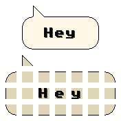
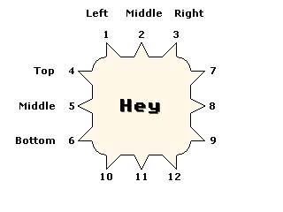
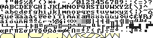

A new feature of the Text Blitter extension are Balloons. Balloons are used in many different environments to display information to the user or played. Many examples of balloons in games are the use of Speach and thought bubbles, applications use them in the form of tool-tips.
The balloon is constructed of little pieces, where each piece comes from an image on your character map that you specify at edit time (also editable at runtime)
The picture below shows a neat looking balloon split up into its component pieces...

Handles are the term used throughout the extension to desribe the little pointy arrows that appear from the balloon to give you an idea of where the information is coming from (if it all)
The following picture desribes which handle numbers represent the handle displayed on screen. The handle is a very important in the positioning of the balloon, the extension will calculate the position of the balloon entirely from the point at which the handle desribes.

The extension gives you the option to used flipped handles. The following example shows what happens when you flip a handle.
Here is an example...
|\______
/ \
| HEY |
\________/
/|______
/ \
| HEY |
\________/
Flipping, changes the position of the point in the handle and so affects the positioning of the balloon. The use of 'flipping', changes the effect and style of the balloon.
Sometimes you may require to pad out the balloon to make it bigger or to highlight the text inside. You can pad all sides of the balloon independantly.
The minimum and maximum options allow you to set limits on how small or how large a balloon can become.
The values alter the minimum and maximum size of the ballon, NOT the area inside, so if you require 30 characters on the inisde of the balloon, you would use 32, due to the sides of the ballon each accounting for 1 character.
The source is the point on the internal bitmap where the extension will begin looking for the balloon segments.
The following image is an example of how the images are laid out in the character map. The images must ALL be on the same line, and immediatly after each other.

The order of the images are given below...
* The first 3 images are the top pieces of the balloon,
* The second 3 images are the middle pieces of the balloon,
* The third 3 images are the bottom pieces of the balloon,
* The next 4 images are the connector images which connect the handles to the balloon,
+ Top - The peice that connects the top handles to the balloon
+ Left - The peice that connects the left handles to the balloon
+ Right - The peice that connects the right handles to the balloon
+ Bottom - The peice that connects the bottom handles to the balloon
* The next 3 images are the handles used on the top of the balloon,
* The next 3 images are the handles used on the left of the balloon,
* The next 3 images are the handles used on the right of the balloon,
* The final 3 images are the handles used on the bottom of the balloon,
Content and Design are Copyright (c) 2001-2002 Christopher Lightfoot. All rights reserved.